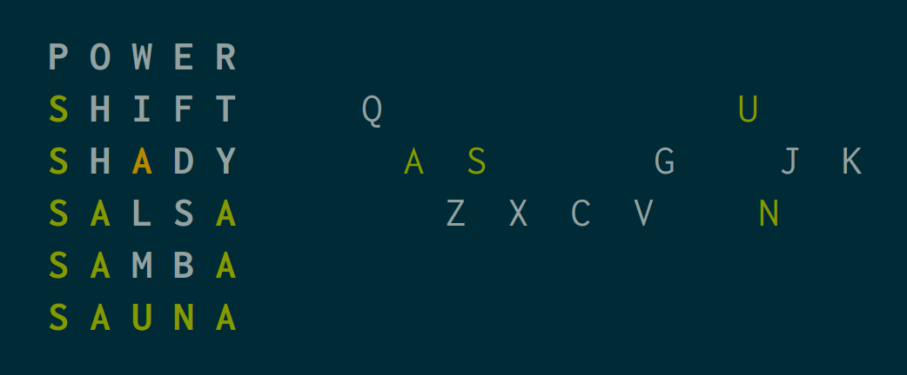
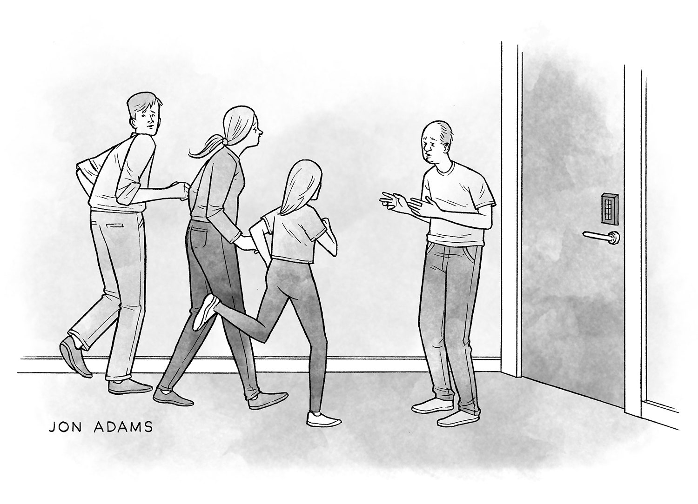

prop.table(ii$hs,ii$smoking,margin=1)A Slower Introduction to R
UCSF Library
Thursday, October 9, 2025
Tip
Please ask questions and participate!
Caution
Please be mindful about seeking help during the mini lectures.
Tip
Try to learn from each other.
Tip
Try to find other ways to practice R.
Caution
This is not a statistics or biostatistics course.


Tip
Focus on problem solving rather than memorization.
Tip
Try to recognize patterns and be detail-oriented.
Tip
Be aware that there may often be multiple solutions to a problem, and be open to exploring them.
Tip
Be patient as you learn fundamentals and think about how you can piece skills together.